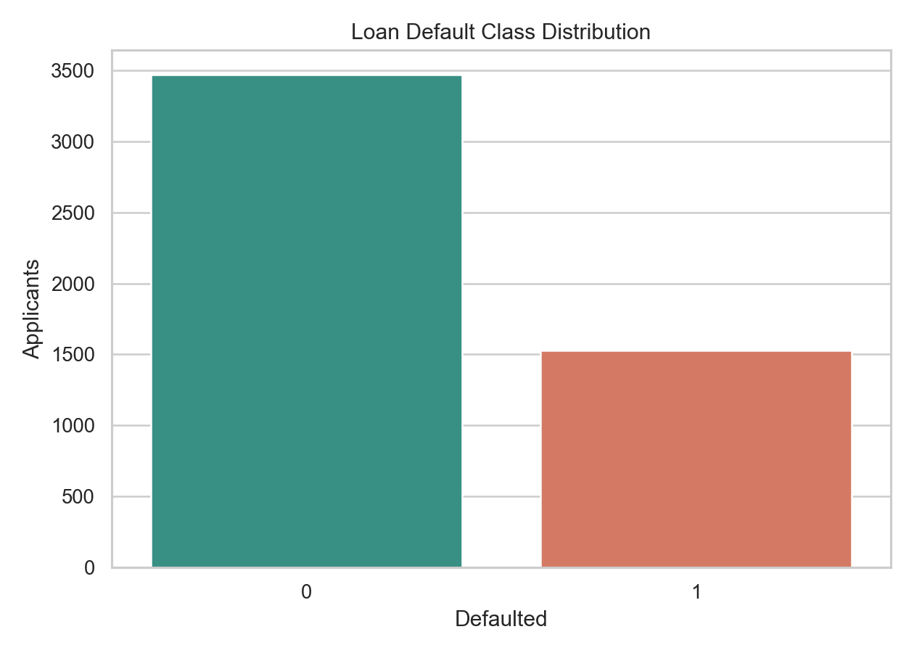
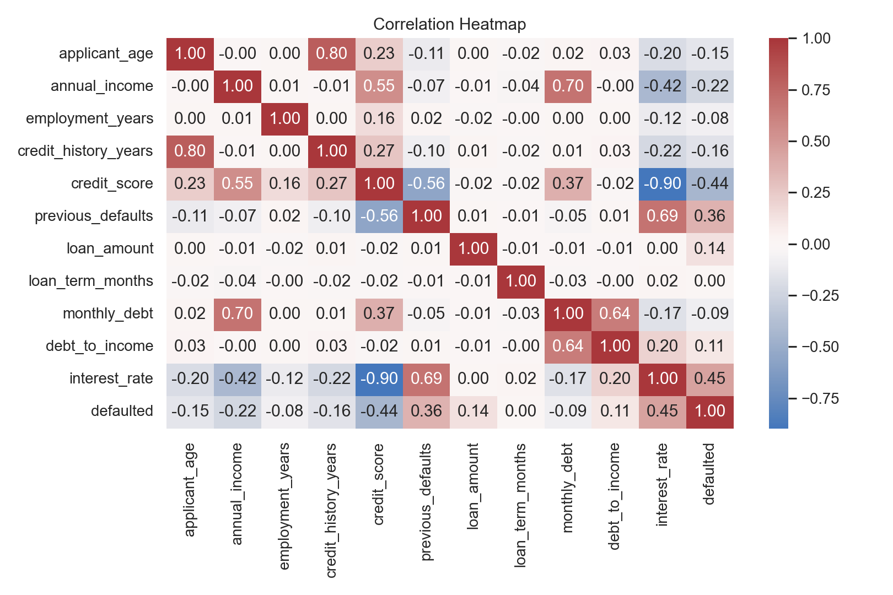
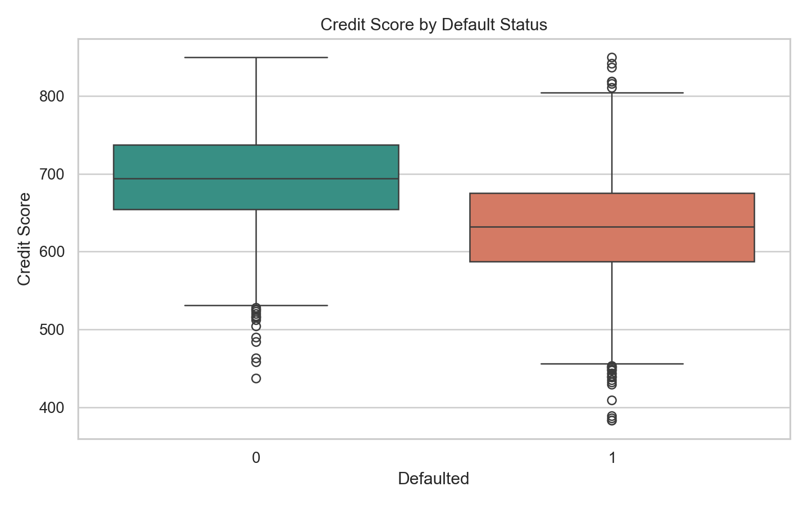
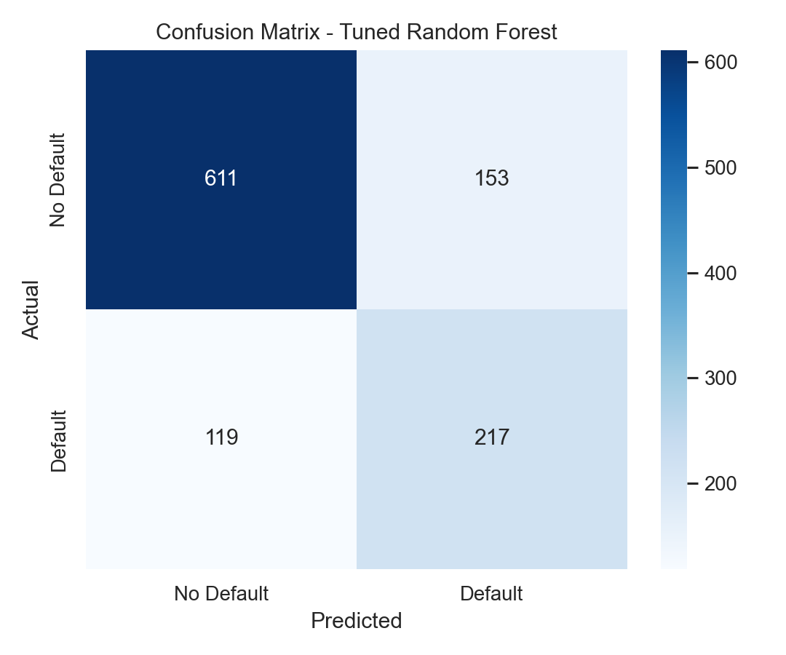
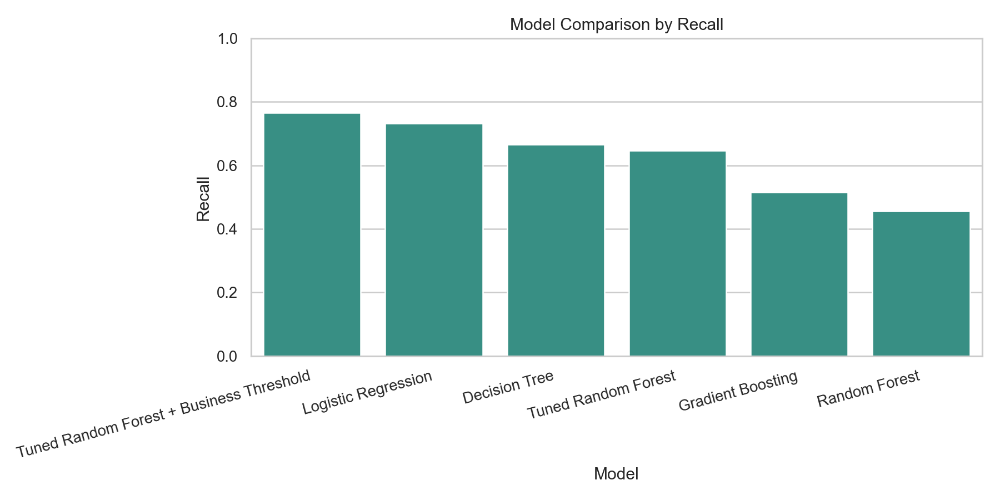
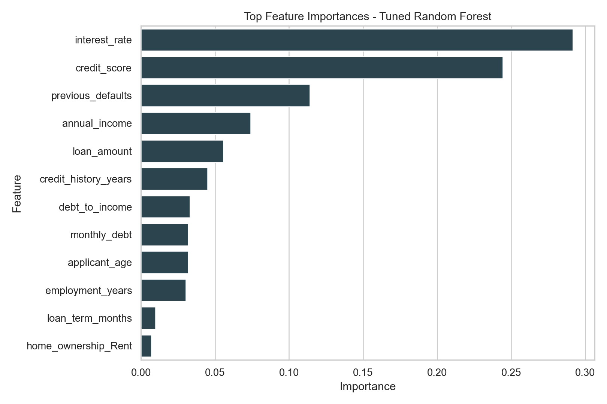
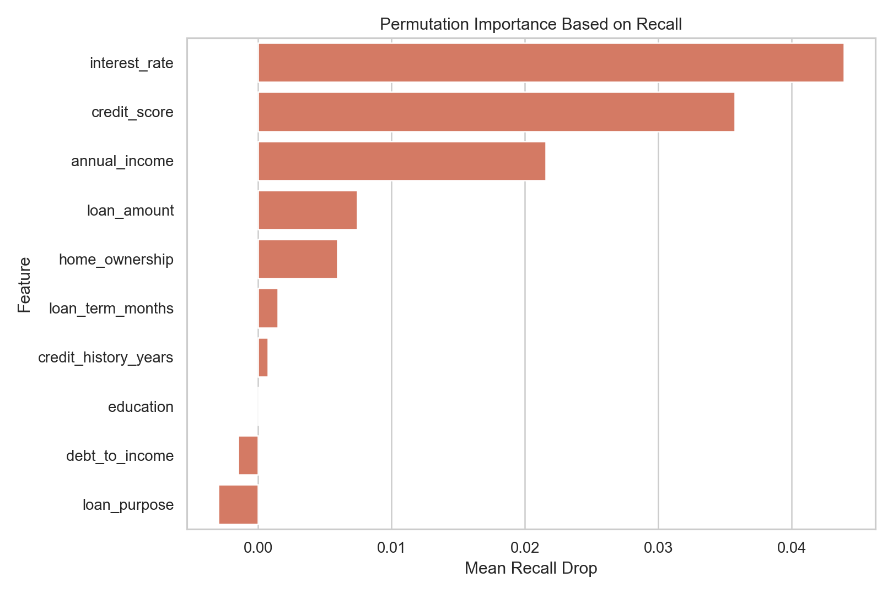

CSE247 Applied Machine Learning
Loan Default Risk Prediction System with Explainable AI
Machine learning pipeline for identifying high-risk loan applicants and explaining the decision.
Problem Statement
Predict whether a loan applicant will default using financial, credit, and personal profile data.
- Input: applicant and loan features
- Output: high-risk or low-risk prediction
- Task type: supervised binary classification
Why It Matters
- Wrong loan approvals can create direct financial loss.
- Risk prediction supports faster and more consistent decisions.
- Explainability helps humans understand why an applicant is risky.
Dataset
5,000Applicant records
15Total columns
14Input features
30.6%Default rate
Preprocessing
- Median imputation for numerical missing values
- Most frequent imputation for categorical missing values
- Standard scaling for numerical columns
- One-hot encoding for categorical columns
- Pipeline-based design to avoid data leakage
EDA: Class Distribution

EDA: Correlation Heatmap

EDA: Credit Score and Default

Models Compared
- Logistic Regression as baseline
- Decision Tree for interpretability
- Random Forest for strong ensemble learning
- Gradient Boosting for performance comparison
Evaluation Strategy
Recall is critical because missing a real defaulter is costly.
- Accuracy, precision, recall, F1-score
- ROC-AUC and PR-AUC
- Confusion matrix
- Business threshold tuned for stronger default detection
Model Result: Confusion Matrix

Model Comparison

Explainable AI

Permutation Importance

Final App
- Accepts applicant and loan details
- Returns default probability
- Classifies applicant as high risk or low risk
- Shows human-readable explanation
Conclusion
- Built complete ML pipeline from data to deployment-style app
- Compared multiple models and tuned Random Forest
- Focused on recall due to financial risk impact
- Added explainability for trust and viva clarity